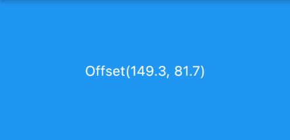

8.1 原始指针事件处理
本节先来介绍一下原始指针事件(Pointer Event，在移动设备上通常为触摸事件)，下一节再介绍手势处理。
8.1.1 命中测试简介
在移动端，各个平台或UI系统的原始指针事件模型基本都是一致，即：一次完整的事件分为三个阶段：手指按下、手指移动、和手指抬起，而更高级别的手势（如点击、双击、拖动等）都是基于这些原始事件的。
当指针按下时，Flutter会对应用程序执行命中测试(Hit Test)，以确定指针与屏幕接触的位置存在哪些组件（widget）， 指针按下事件（以及该指针的后续事件）然后被分发到由命中测试发现的最内部的组件，然后从那里开始，事件会在组件树中向上冒泡，这些事件会从最内部的组件被分发到组件树根的路径上的所有组件，这和Web开发中浏览器的事件冒泡机制相似， 但是Flutter中没有机制取消或停止“冒泡”过程，而浏览器的冒泡是可以停止的。注意，只有通过命中测试的组件才能触发事件，我们会在下一节中深入介绍命中测试过程。
注意：术语“Hit Test ”的中文翻译比较多，如 “命中测试”、“点击测试” ，对于名字我们不用较真，知道它们代表的是 “Hit Test ” 即可。
8.1.2 Listener 组件
Flutter中可以使用Listener来监听原始触摸事件，按照本书对组件的分类，则Listener也是一个功能性组件。下面是Listener的构造函数定义：
Listener({
Key key,
this.onPointerDown, //手指按下回调
this.onPointerMove, //手指移动回调
this.onPointerUp,//手指抬起回调
this.onPointerCancel,//触摸事件取消回调
this.behavior = HitTestBehavior.deferToChild, //先忽略此参数，后面小节会专门介绍
Widget child
})
我们先看一个示例，下面代码功能是： 手指在一个容器上移动时查看手指相对于容器的位置。
class _PointerMoveIndicatorState extends State<PointerMoveIndicator> {
PointerEvent? _event;
@override
Widget build(BuildContext context) {
return Listener(
child: Container(
alignment: Alignment.center,
color: Colors.blue,
width: 300.0,
height: 150.0,
child: Text(
'${_event?.localPosition ?? ''}',
style: TextStyle(color: Colors.white),
),
),
onPointerDown: (PointerDownEvent event) => setState(() => _event = event),
onPointerMove: (PointerMoveEvent event) => setState(() => _event = event),
onPointerUp: (PointerUpEvent event) => setState(() => _event = event),
);
}
}
运行后效果如图8-1所示：

手指在蓝色矩形区域内移动即可看到当前指针偏移，当触发指针事件时，参数 PointerDownEvent、 PointerMoveEvent、 PointerUpEvent 都是PointerEvent的子类，PointerEvent类中包括当前指针的一些信息，注意 Pointer，即“指针”， 指事件的触发者，可以是鼠标、触摸板、手指。
如：
position：它是指针相对于当对于全局坐标的偏移。localPosition: 它是指针相对于当对于本身布局坐标的偏移。delta：两次指针移动事件（PointerMoveEvent）的距离。pressure：按压力度，如果手机屏幕支持压力传感器(如iPhone的3D Touch)，此属性会更有意义，如果手机不支持，则始终为1。orientation：指针移动方向，是一个角度值。
上面只是PointerEvent一些常用属性，除了这些它还有很多属性，读者可以查看API文档。
还有一个behavior属性，它决定子组件如何响应命中测试，关于该属性我们将在8.3节中详细介绍。
8.1.3 忽略指针事件
假如我们不想让某个子树响应PointerEvent的话，我们可以使用IgnorePointer和AbsorbPointer，这两个组件都能阻止子树接收指针事件，不同之处在于AbsorbPointer本身会参与命中测试，而IgnorePointer本身不会参与，这就意味着AbsorbPointer本身是可以接收指针事件的(但其子树不行)，而IgnorePointer不可以。一个简单的例子如下：
Listener(
child: AbsorbPointer(
child: Listener(
child: Container(
color: Colors.red,
width: 200.0,
height: 100.0,
),
onPointerDown: (event)=>print("in"),
),
),
onPointerDown: (event)=>print("up"),
)
点击Container时，由于它在AbsorbPointer的子树上，所以不会响应指针事件，所以日志不会输出"in"，但AbsorbPointer本身是可以接收指针事件的，所以会输出"up"。如果将AbsorbPointer换成IgnorePointer，那么两个都不会输出。